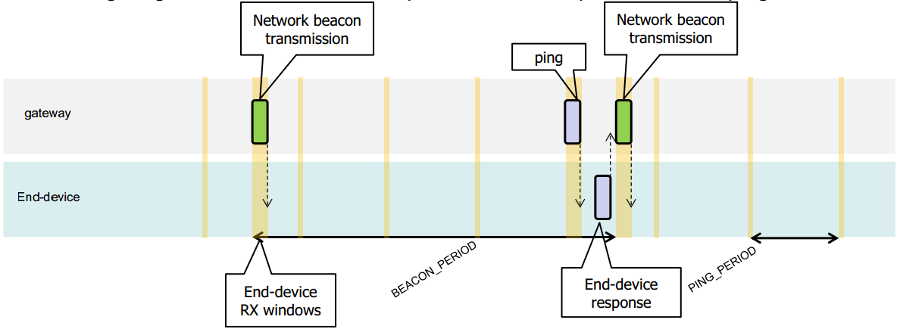

第9章 下行同步网络的原理
对于一个支持ClassB的网络，所有网关必须同步广播一个信标，以给所有终端提供一个参考时间。基于这个时间参考，终端可以周期性地打开接收窗口，下文称之为“ping slot”，这个“ping slot”被网络建设者用于发起下行通信。网络使用ping slots其中之一来发起下行通讯的行为，称之为“ping”。用来发起下行通讯的网关，是network server根据终端最近一次上行包的信号传输质量来选择的。基于此，如果终端根据广播的信标帧发现网络发生了切换(通信的网关发生了变化)，它必须发出上行帧给network server，以使server端更新下行路径的数据库。
所有终端启动后，以Class A来加入网络。之后终端应用层可以切换到Class B。通过以下步骤来实现：
终端应用层请求LoRaWAN层切换到Class B模式。终端的LoRaWAN层搜索信标帧，如果搜索到并且锁定了信标帧，那么就向应用层返回BEACON_LOCKED的服务原语，反之则返回BEACON_NOT_FOUND的服务原语。为了促进信标帧的搜索，LoRaWAN层可以使用稍后介绍的 “BeaconTimingReq” 消息。
基于信标的强度和电池寿命，终端的应用层选择ping slot所需的数据速率和周期，这可以从LoRaWAN层获取到。
一旦处于Class B模式，MAC层需要在所有上行帧的FCTRL字段中，将Class B的位域置为1。这个位用来通知server，设备已经切换到Class B模式。MAC层会给每个beacon和ping时隙安排接收时隙。当成功接收信标，终端的LoRaWAN层将会转发beacon内容给应用层，同时携带测量的射频信号强度。终端的LoRaWAN层在安排beacon和ping时隙时，需要考虑可能的最大时钟偏移。当在ping时隙成功解调出下行帧，它的处理和Class A 的方式一样。
移动的终端，必须周期性地通知network server其位置信息，以便确定下行路径。这是通过发送普通的(可能是空包)“unconfirmed”或者“confirmed”上行包来实现。终端的LoRaWAN层需要将Class B的位域置为1。如果应用程序通过解析beacon内容来判断节点移动，那将会使得这个事情变得更高效。这种情况下终端需要在beacon接收后随机延时一段时间(具体见章节15.5)再上行，避免上行帧冲突。
如果在指定周期内没有接收到beacon(具体见章节12.2)，则意味着网络同步丢失。MAC层必须通知应用层切换回Class A。随后终端在上行帧的LoRaWAN层中将不再设置Class B的位域，用以通知network server终端不再处于 Class B 模式。终端的应用程序可以周期性地尝试切换回 Class B。在做这个处理时要先探寻下beacon。
下面这张图展示了beacon接收时隙和ping时隙。

在这个示例中，指定beacon周期是128秒，ping接收时隙的周期是32秒。大部分时候server并没有使用ping时隙，因此终端可以在接入信道时监听下是否有前导码，如果没有则立即关闭接收窗口。如果监测到前导码，则射频会持续接收，直到下行帧解调完毕。MAC层随后处理数据帧，检查确认地址域匹配和MIC校验有效之后再转发给应用层。